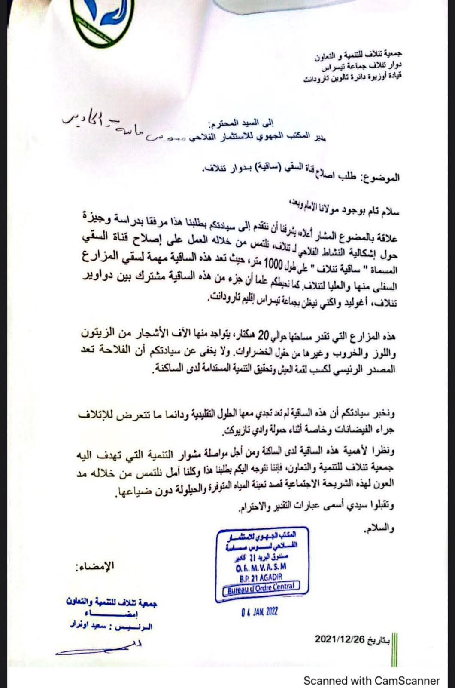
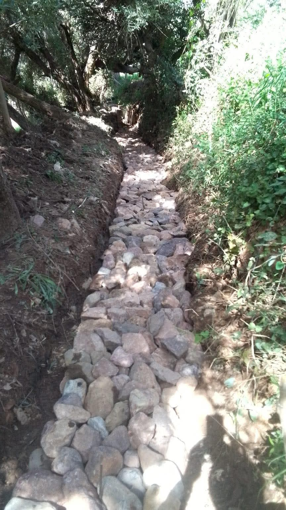
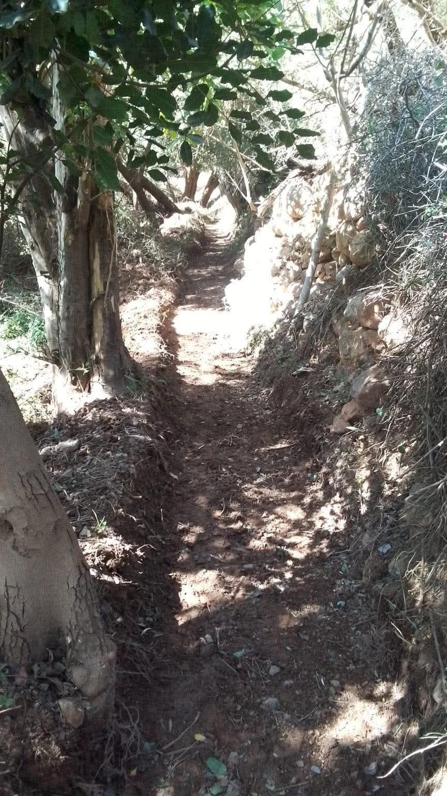
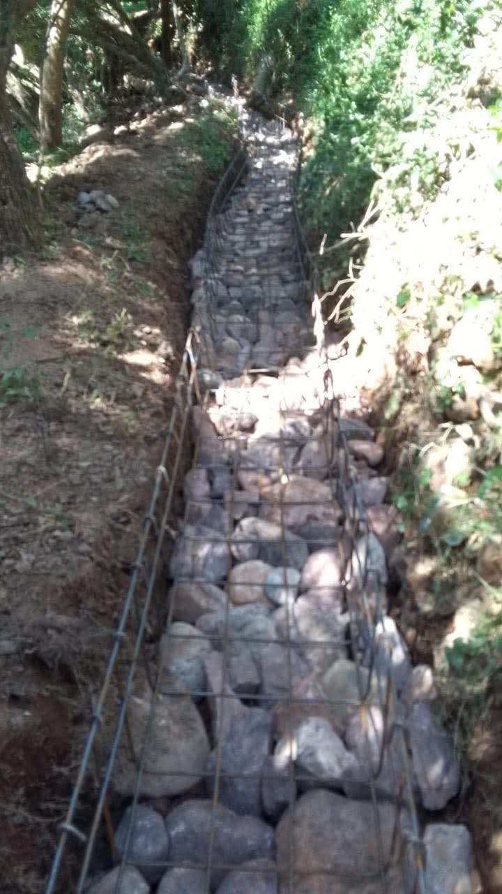

Canal d'irrigation
Les travaux de rénovation de la Saguia (Canal d’irrigation agricole) du douar Tinlaf ont débuté après la réponse favorable du Bureau Régional Ormva Souss Massa à la demande déposée par l’Association TINLAF en 2021. Nous remercions le bureau régional pour sa réactivité et espérons le bon déroulement des travaux, qui visent à renforcer l’agriculture rurale et à soutenir les agriculteurs du douar pour un développement agricole efficace et durable.



